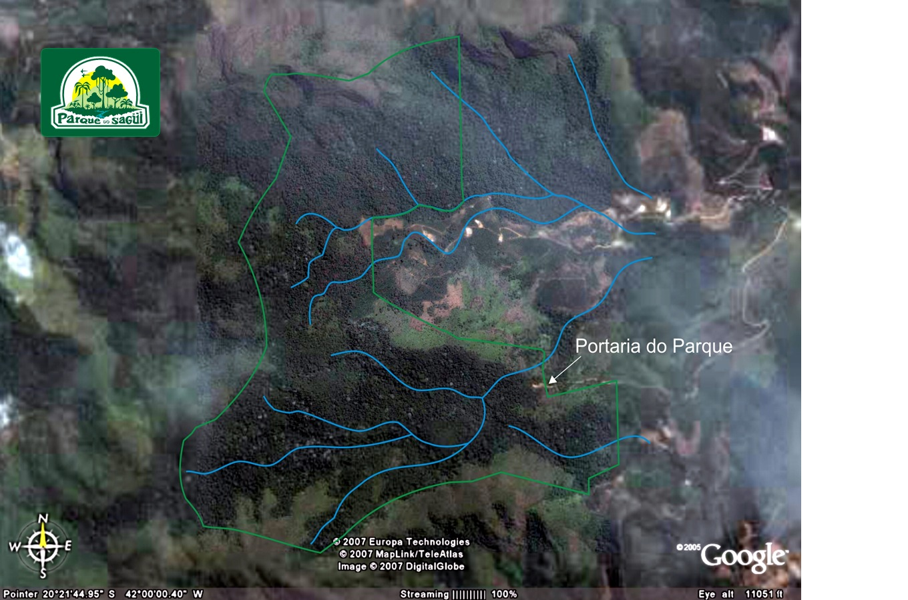

As queimadas em Minas Gerais deixaram de ser apenas um problema sazonal e passaram a representar uma grande ameaça ambiental e social. O clima seco, as altas temperaturas e os ventos fortes favorecem a propagação do fogo, principalmente entre os meses de julho e outubro. Porém, a principal causa dos incêndios continua sendo a ação humana, responsável pela maior parte dos casos registrados no estado. Entre os motivos mais comuns estão o uso inadequado do fogo na agricultura, a limpeza de pastagens e ações criminosas ou irresponsáveis em áreas urbanas e rurais. Em 2024, Minas Gerais registrou mais de 24 mil ocorrências de incêndios, o maior número da série histórica, mostrando a gravidade da situação. Além da destruição da vegetação nativa, as queimadas causam impactos diretos na biodiversidade, na qualidade do ar e na saúde da população. A fumaça libera poluentes que prejudicam principalmente crianças, idosos e pessoas com problemas respiratórios. O fogo também ameaça animais silvestres, fontes de água e contribui para a erosão do solo. Nos últimos 40 anos, cerca de 17% do território mineiro já foi atingido por incêndios ao menos uma vez. Diante desse cenário, o uso de tecnologias como sensores de alerta a queimadas se torna fundamental para identificar focos de incêndio rapidamente, emitir alertas para a população e auxiliar equipes de combate antes que o fogo se espalhe.
O sensor de alerta a queimadas tem como objetivo monitorar áreas de risco e identificar aumentos anormais de temperatura e fumaça em tempo real. Quando o sensor detecta sinais de incêndio, ele envia alertas imediatos para um aplicativo ou sistema conectado, permitindo que moradores, brigadas de incêndio e autoridades ajam rapidamente. Essa tecnologia ajuda a reduzir danos ambientais, proteger a fauna e diminuir os riscos para as pessoas que vivem próximas às áreas afetadas. Em locais de preservação ambiental, como parques e reservas naturais, o sistema pode ser essencial para evitar incêndios de grandes proporções.
Além da prevenção, o uso do sensor também contribui para a conscientização ambiental e para a segurança da população. O sistema pode emitir notificações sonoras, vibrações e mensagens de emergência informando sobre o perigo e orientando os usuários sobre como agir. Em Minas Gerais, onde a quantidade de queimadas cresce a cada ano, soluções tecnológicas como essa podem auxiliar no monitoramento constante das áreas vulneráveis e no combate rápido aos focos de incêndio. Dessa forma, o projeto une tecnologia, sustentabilidade e proteção ambiental para ajudar no enfrentamento de um dos maiores problemas ambientais do estado.
Nossa Resposta: Sistema Inteligente de Prevenção de Queimadas
Com base nas duas pesquisas apresentadas sobre a situação das queimadas em Minas Gerais, observa-se que o estado enfrenta um cenário crítico. A primeira pesquisa aponta uma média de 46 queimadas por dia, totalizando mais de 10,8 mil focos de incêndio somente neste ano. Os dados revelam que a maioria das ocorrências tem origem humana, seja por práticas inadequadas na agricultura, limpeza de pastagens ou ações intencionais, resultando em danos ambientais como destruição de florestas, perda de biodiversidade, poluição do ar e comprometimento do solo e das nascentes.
A segunda pesquisa, fundamentada em registros do Corpo de Bombeiros e da Defesa Civil, confirma os números: até agosto de 2025, foram atendidas 10.850 ocorrências de queimadas, com julho sendo o mês mais crítico (3.539 registros). As condições climáticas — tempo seco, ventos fortes e temperaturas superiores a 36°C — agravam o risco, especialmente nas regiões do Triângulo Mineiro e Alto Paranaíba.

Diante desse contexto, o projeto proposto — monitorar florestas e pastagens por meio de um termômetro que detecta elevação brusca de temperatura e emite alerta automático ao Corpo de Bombeiros ou Defesa Civil — mostra-se plenamente alinhado às necessidades apontadas pelas pesquisas. O grupo decidiu focar também na região próxima a nós, especialmente no Parque do Sagui, devido à importância da fauna local. A presença de espécies nativas e muitas vezes ameaçadas torna essa área prioritária para a prevenção de queimadas, pois um incêndio na região poderia causar perda irreparável da biodiversidade ali existente.
O projeto desenvolvido pelo grupo tem como objetivo monitorar áreas de florestas e pastagens para evitar queimadas, com foco inicial na região próxima a nós, especialmente no Parque do Sagui. O funcionamento do sistema é baseado na instalação estratégica de termômetros em pontos de risco dentro e no entorno do parque. Esses termômetros são programados para monitorar continuamente a temperatura ambiente. Quando ocorre uma elevação brusca e atípica da temperatura — característica do início de um incêndio — o sistema interpreta esse aumento como um indicativo de fogo. Imediatamente, um sinal de alerta é emitido automaticamente para o Corpo de Bombeiros e para a Defesa Civil, contendo informações como a localização exata do foco e o horário da detecção.
A principal vantagem desse sistema é a velocidade de resposta. Diferentemente da detecção por satélite, que pode levar minutos ou até horas para identificar um foco, os termômetros captam a mudança térmica no local em tempo real. Isso permite que as autoridades sejam acionadas nos primeiros instantes do incêndio, aumentando significativamente as chances de controle antes que as chamas se alastrem. Além disso, o sistema pode ser complementado com sensores de fumaça e ter um custo de implantação relativamente baixo se comparado aos danos causados por um grande incêndio.
A detecção precoce e o acionamento imediato das autoridades podem reduzir significativamente o tempo de resposta, complementar o monitoramento por satélite e atuar de forma preventiva, protegendo tanto a vegetação quanto os animais que dependem desse ambiente. Dessa forma, o projeto alia tecnologia simples e eficaz à proteção ambiental, atuando de forma preventiva e contribuindo diretamente para a redução das queimadas, a preservação do Parque do Sagui, a proteção da fauna local e a segurança da população do entorno.
Portanto, o projeto não se limita a uma ideia teórica: trata-se de uma solução viável, de baixo custo e com grande potencial de aplicação prática na realidade do nosso entorno. Ao unir tecnologia acessível à conscientização sobre os riscos das queimadas, o grupo acredita que é possível agir antes da tragédia, e não depois dela. Proteger o Parque do Sagui e sua fauna é proteger um patrimônio que pertence a toda a comunidade. Com o monitoramento contínuo e o alerta imediato às autoridades, o fogo perde o tempo que precisa para se alastrar — e a vida ganha a chance de prevalecer.
A inovação não precisa ser apenas uma palavra bonita – ela pode transformar realidades, e estamos certos de que o nosso projeto é um passo importante nessa direção.